01Getting started
Foreman has two parts. The host goes on the computer where your agents actually run; the app goes on the devices you use to follow and approve sessions. The host owns each session, so the agent keeps running when you close the terminal window or lose the connection, and the app can attach again at any time.
Installing the Mac host
- Put Foreman Host in your Applications folder and open it. It does not appear in the Dock; a pulse icon appears in the menu bar.
- Open the menu. When the top line reads 이 Mac이 호스트로 동작 중 (this Mac is working as a host), you are ready. The line below shows the foremand version, the number of sessions and the remote connection status.
- Turn on 로그인 시 시작 (start at login). The host now starts every time you log in to the Mac and restarts within seconds if it stops. If 승인 필요 (approval needed) appears next to the toggle, allow Foreman Host in System Settings › General › Login Items.
- If you also use the Foreman app on the same Mac, it connects to this host directly, without pairing.
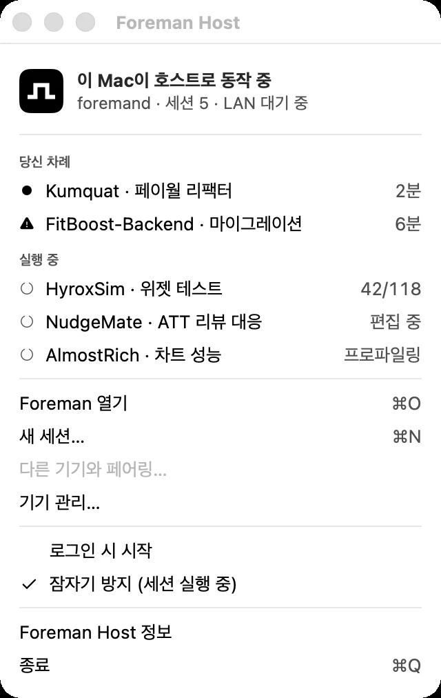
- Foreman 열기 ⌘O (Open Foreman)
- Opens the Foreman app.
- 다른 기기와 페어링… (Pair another device)
- Shows the QR code for connecting a phone or another device (Pairing).
- 기기 관리… (Manage devices)
- Lists and revokes the devices paired with this host.
- iCloud·Google 연결… (connect iCloud · Google)
- Connects the host to your own cloud account (Cloud account).
- 잠자기 방지 (세션 실행 중) (prevent sleep while sessions run)
- Keeps the Mac awake while a session runs (Keeping the host on).
- 상시 가동 점검… (always-on check)
- Checks, and fixes, whether this Mac can keep sessions running with nobody at it (Mac always-on check).
- 종료 ⌘Q (Quit)
- Quits only the Foreman Host app. The host daemon and your sessions keep running.
Installing the Windows host
- Install the Foreman Host package (MSIX). It needs Windows 10 version 1809 or later.
- The package installs the
foremancommand, the host daemon and firewall rules for private and domain networks. There is nothing else to set up. - A startup task named “Foreman Host” starts the host when you sign in. Check it with
foreman autostart statusin PowerShell. If it says it is off, turn Foreman Host on in Task Manager › Startup apps. - Run
foreman doctorto check that the PC is ready to stay on (Keeping the host on).
A host installed from a zip file instead of the package turns on start-at-sign-in with foreman autostart enable. No administrator rights are needed.
iPhone · iPad · Mac apps
On iPhone and iPad, get Foreman from the App Store; the Apple Watch app comes with the iPhone app. On a Mac, install the Foreman app to follow sessions, and Foreman Host to use that Mac as a host. They are separate apps and can live on the same Mac.
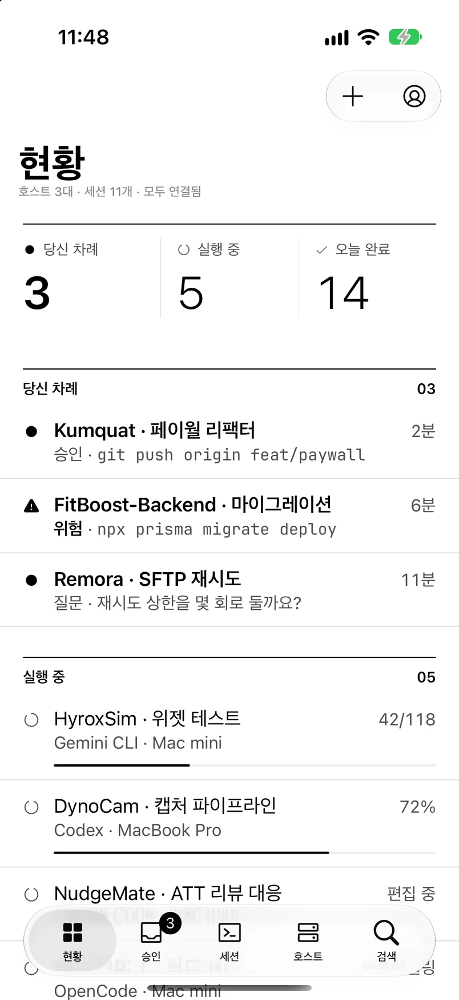
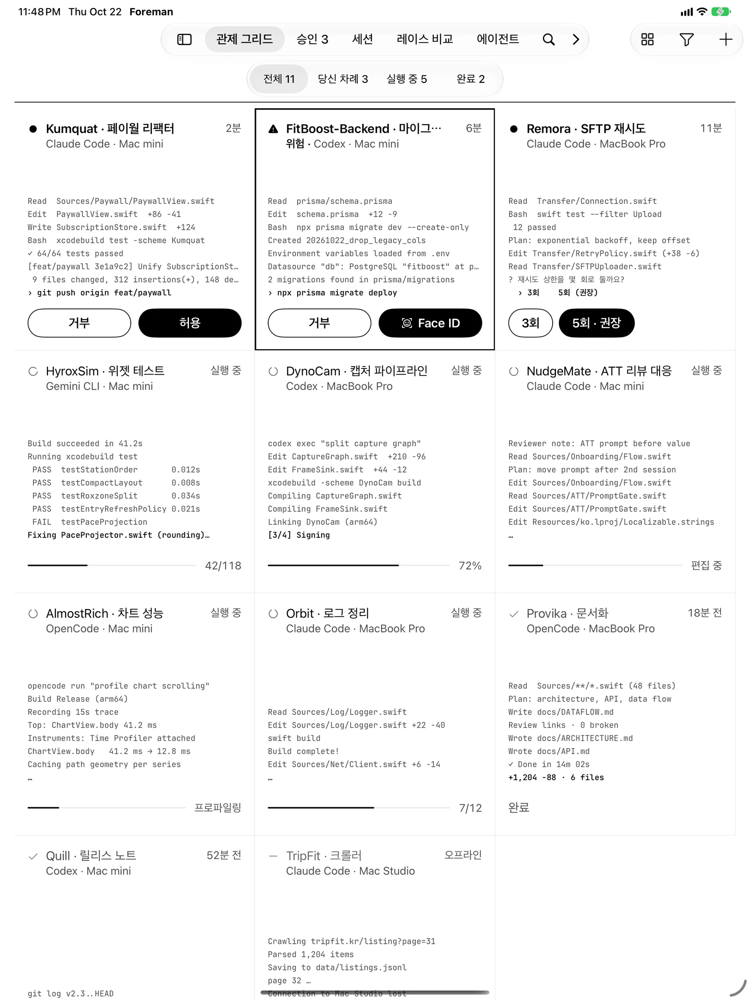
Android app
Get Foreman from Google Play. It runs on Android 8.0 and later. The tabs at the bottom are 현황 (Home), 승인 (Approvals), 세션 (Sessions) and 호스트 (Hosts); open Settings from the account icon at the top right of Home or the gear on the Hosts tab. On wide screens such as tablets the tabs move to the side and lists and details sit side by side.
- On first launch it asks for permission to post notifications. Allow it to get approval requests as notifications.
- 앱을 닫아도 호스트와 연결 유지 (stay connected when the app is closed) under Settings › Connection is on by default. It keeps the connection to your hosts after you close the app so notifications arrive, and shows a small notification at the top while it does.
- Under Settings › Notifications, turn approval, question and session-done notifications on or off one by one. Session-done notifications are off by default.
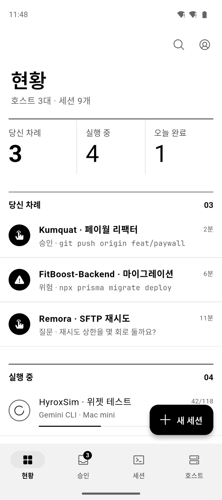
Windows app
Get Foreman from the Microsoft Store. It runs on Windows 10 version 2004 and later (x64). The menu on the left holds 현황 (Home), 승인 (Approvals), 세션 (Sessions), 레이스 (Race), 에이전트 (Agents) and your paired hosts, with 설정 (Settings) at the bottom.
- Closing the window does not quit the app; it moves to the notification area (tray). The tray icon’s menu has Foreman 열기 (Open Foreman) and 끝내기 (Quit).
- Approval notifications arrive only while the app is running. To start it in the tray when you sign in, turn Foreman on under Windows Settings › Apps › Startup.
- Shortcuts: Ctrl+N new session, Ctrl+K search, Ctrl+] go to the next session waiting for an approval.
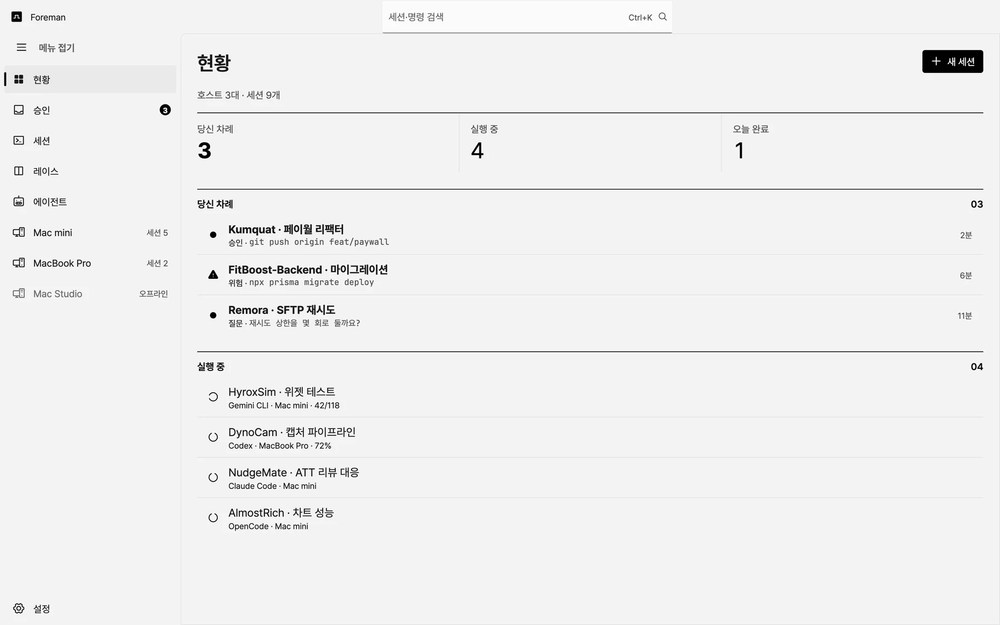
02Pairing
The apps connect only to hosts they have been paired with. During pairing both sides check each other’s keys, and every connection after that is encrypted end to end.
Connecting with the QR code
- On the host Mac, open Foreman Host › 다른 기기와 페어링… (Pair another device) in the menu bar. On a Windows host, run
foreman pairin PowerShell; the QR code and link appear in the terminal. - On the device, open the pairing screen and scan the QR code or paste the link.
- A code works once and expires after 5 minutes. If it expired, press 새 코드 (New code) on the host or run
foreman pairagain.
| Device | Pairing screen | How |
|---|---|---|
| iPhone · iPad | Settings › 호스트 페어링… (Pair a host) | Scan the QR code. Without a camera, paste the link (foreman://pair?…) into 또는 페어링 링크 (or pairing link) and tap 연결 (Connect). |
| Mac app | 호스트 페어링 (Pair a host) at the bottom of the sidebar | Paste the link shown on the host and click 연결 (Connect). |
| Android | The + button on the Hosts tab (호스트 페어링 (Pair a host)) | Scan with QR 스캔 (Scan QR), or paste the link into 페어링 링크 (pairing link) and tap 연결 (Connect). |
| Windows app | Settings › Hosts › 호스트 페어링 (Pair a host) › 페어링 (Pair) | Paste the link shown on the host and click 연결 (Connect). |
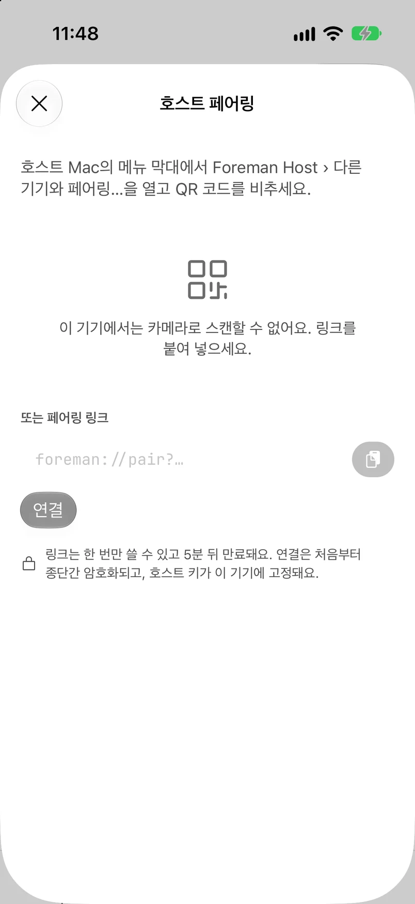
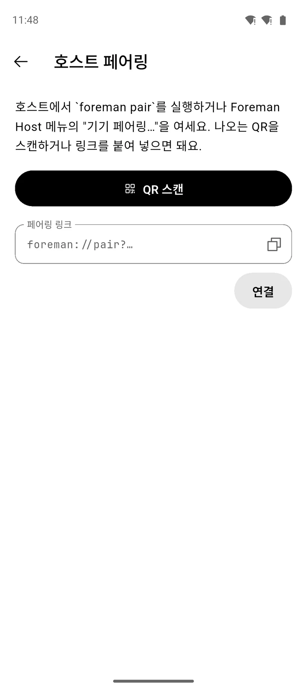
The six-digit check
Once the connection opens, the host and the device show the same six digits (for example 491 795). The digits are derived from the keys the two devices exchanged, so anyone in the middle would make them differ.
- The device asks 호스트 화면의 숫자와 같나요? (does this match the host screen?) and the host asks whether the digits match the device.
- If the digits match, confirm on both sides: 같아요 (They match) on iPhone, iPad and Mac, 같다 (Match) in the Android and Windows apps. In
foreman pair, type y. - Pairing completes only when both sides confirm. When the device shows …와 페어링했어요 (paired with …), you are done. From then on the app connects on its own whenever the host is on.
If the digits differ, press 달라요 (They differ) (다르다 (Differ) in the Android and Windows apps). Nothing is paired. Someone may have got in the middle of the connection; check your network before you start again with a new code.
Several hosts and connection status
One app can be paired with several hosts; go through the steps above once per host. The Hosts tab (the left menu in the Windows app) shows the status of each.
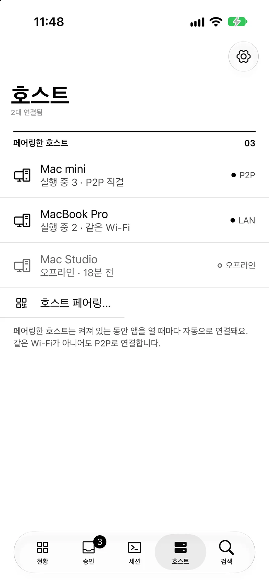
| Status | Meaning |
|---|---|
| 연결됨 (connected) | The app is connected to the host. The route is shown with it (Routes). |
| 연결 중 · 다시 연결하는 중 (connecting · reconnecting) | A connection is opening. After a drop the app retries on its own and picks up the output from where it stopped. |
| 꺼짐 추정 (probably off) | Two attempts in a row failed. The host is most likely off or asleep. The app reconnects when it comes back. |
| 거절됨 · 다시 페어링 필요 (refused · pair again) | The host revoked this device. Pair again to use it. |
Tap a host to see its route, how long it has been up, and the encryption in use (Noise XX, end to end). The Android and Windows apps also show the host key fingerprint, this device’s key fingerprint and the host version.
Managing and revoking devices
On the host Mac, Foreman Host › 기기 관리… (Manage devices) lists the devices paired with this host, their key fingerprints, and whether they are connected. For a lost or retired device, press 폐기 (Revoke): it is unpaired at once and its open connections are closed. On a Windows host, list devices with foreman devices and revoke one with foreman devices revoke <id>.
Removing a host from the app
Open the host and tap 이 호스트와의 페어링 해제 (unpair this host) on iPhone or iPad, 이 기기에서 호스트 지우기 (remove host from this device) on Android, or 이 PC에서 지우기 (remove from this PC) in the Windows app. This deletes the host key and addresses stored on the device. The host still lists the device, so to clean up completely, also revoke it on the host.
03Cloud account
Connect the host to your own iCloud account and approval requests reach your iPhone or iPad as notifications even when the app is closed, and the apps reach the host away from home (Away from home). You connect once, on the host. The host does not use the iCloud account signed in on that computer, only the account you sign in with in the browser, so it works the same on someone else’s computer.
Connecting iCloud on the host
Mac host
- In the menu bar, open Foreman Host › iCloud·Google 연결… (connect iCloud · Google). The 클라우드 연결 (Cloud connection) window opens.
- Click 연결… (Connect) on the iCloud row. The Apple sign-in page opens in your browser.
- Sign in with the same Apple ID you use on your iPhone. Tick 로그인 상태 유지 (Keep me signed in) so it does not ask again for weeks.
- When the browser shows iCloud에 연결했어요. 이 탭을 닫아도 됩니다. (connected to iCloud; you can close this tab), close the tab. The iCloud row in the window changes to 연결됨 (connected) and 원격 연결 (remote connection) to iCloud.
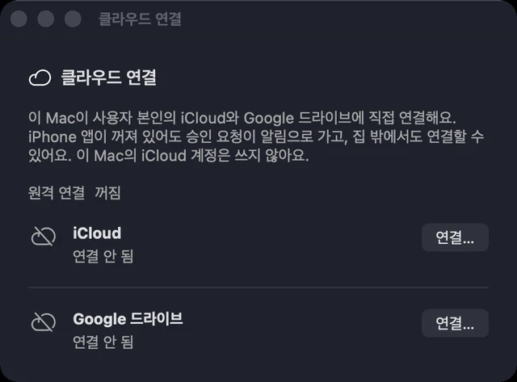
The iPhone and iPad apps connect through iCloud, so connect iCloud. If you closed the sign-in page, click 로그인 페이지 다시 열기 (open the sign-in page again) in the window.
Windows host
foreman cloud login icloudThe Apple sign-in page opens in your browser. As on the Mac, sign in with your iPhone’s Apple ID and tick “Keep me signed in”. When sign-in completes, the terminal prints iCloud: connected. If no browser opens, open the address printed in the terminal yourself (--no-browser prints only the address). Check the status with foreman cloud.
The sign-in token goes only into the host’s secure store (the keychain on a Mac, DPAPI on Windows), never into a plain file.
Checking on iPhone · iPad
iPhone and iPad use the device’s own iCloud account; there is no separate sign-in in the app. In the device settings, make sure iCloud is signed in with the same Apple ID you connected on the host.
- In the Foreman app, open Settings › iCloud 연결 (iCloud connection).
- Under Status, iCloud 계정 (iCloud account) should read 사용 가능 (available). If it reads iCloud에 로그인되어 있지 않아요 (not signed in to iCloud), sign in to iCloud in the device settings.
- When 푸시 구독 (push subscription) reads 켜짐 (on), you are set. If it is off, tap 알림 구독 켜기 (turn on notification subscription). Approval requests from the host now arrive as notifications even when the app is closed.
Notifications travel through iCloud encrypted with a per-device key, and the iPhone decrypts them for display. In test measurements, a notification sent by the host reached the iPhone within 0.4–1 second, also with the app closed.
Signing in again and disconnecting
If the sign-in expires, only the routes through iCloud pause; connections on the same network keep working. The iPhone app shows a request to sign in again under Settings › iCloud, and 다시 로그인 (sign in again) appears next to iCloud·Google 연결… (connect iCloud · Google) in the Foreman Host menu.
- Mac: click 다시 로그인 (sign in again) in the Cloud connection window and sign in again in the browser.
- Windows: run
foreman cloud login icloudagain. - You cannot sign in on the iPhone and hand the sign-in to the host; signing in always happens on the host.
To disconnect, click 연결 해제 (disconnect) in the window on a Mac, or run foreman cloud logout icloud on Windows. The token stored on the host is deleted and the routes through iCloud turn off.
What is stored in the cloud
Foreman uses only its own area inside your iCloud private database. It counts against your own iCloud storage, and the developer cannot see it.
| Record | Content | Kept |
|---|---|---|
| Host address | Addresses the apps use to find the host, sealed with the host key. | Rewritten by the host from time to time |
| Connection signals | Messages that open a P2P connection, encrypted so only the device and the host can read them. | Cleared after 10 minutes |
| Mailbox | Messages exchanged while connected via iCloud, kept as Noise ciphertext. | Deleted once the receiver reads them |
| Notifications | Approval request notifications, encrypted with a per-device key so commands and project names are never stored in plain text. | Deleted after one day |
04Away from home
When the host is connected to iCloud, the iPhone and iPad apps reach it even when you are not on the same Wi-Fi. There is nothing to set up: the app tries every possible route at once and uses the fastest.
Routes
The host list and the 연결 (connection) line in host details show the route in use.
| Shown as | Route |
|---|---|
| 같은 Wi-Fi (same Wi-Fi) | Connected straight to the host: on the same network, or through a path your router opened to the host. |
| P2P 직결 (P2P direct) | Connected directly to the host from another network. Only the signals that open the connection go through iCloud; session content travels straight between the device and the host. |
| iCloud 경유 (via iCloud) | When no direct connection is possible, iCloud carries the messages like a mailbox. Output may arrive in batches a few seconds apart. |
| 이 기기 (this device) | The Mac app connected to the host on the same Mac. |
While on a slower route, the app keeps trying faster ones and moves over without losing output. Every route is encrypted end to end with Noise, so routers and iCloud only see ciphertext. In test measurements, a P2P connection opened in under one second.
Checking the connection
- Apps: tap a host; 연결 (connection) shows the current route. The Android and Windows apps show 경로 (route), 최근 주소 (last address) and 마지막 메시지 (last message).
- Mac host: the top line of the Foreman Host menu and 원격 연결 (remote connection) in the Cloud connection window show whether iCloud is connected.
- Host command: the remote connection line of
foreman statusshows the connected cloud and whether the router opened a port (UPnP, NAT-PMP, PCP). Example:원격 연결: iCloud (매핑 upnp 203.0.113.9:7878)
05Connecting agents
Supported agents
| Agent | What Foreman follows |
|---|---|
| Claude Code | The conversation, tool use, approval requests and questions, all answerable from the app, whether the session started in a terminal or in the app. |
| Codex | Started from the app: the conversation and approvals. Started from a terminal: the terminal screen and the conversation record. |
| Gemini CLI · OpenCode | The conversation and approvals of sessions started from the app. |
| Any other command | The terminal screen, to view and type into. |
Running agents from the terminal as usual
With the shell integration on, claude, codex, gemini and opencode started in a terminal the usual way become Foreman sessions. They show up in the app at once, and keep running on the host when you close the terminal.
Mac (zsh)
/Applications/ForemanHost.app/Contents/MacOS/foreman shim installA block marked as Foreman’s is added to ~/.zshrc, and the original file is backed up as .foreman-backup-<date>. It applies to new terminals (or after exec zsh).
Windows (PowerShell)
foreman shim installThe same block is added to your PowerShell profile and applies from the next PowerShell window. If the execution policy is Restricted or AllSigned, run Set-ExecutionPolicy -Scope CurrentUser RemoteSigned yourself as advised; Foreman does not change the policy.
- To run an agent once without Foreman, call it as
command claude(in PowerShell,claude.exe). - To integrate only some agents, name them:
foreman shim install claude codex. - Check with
foreman shim status; remove withforeman shim uninstall.
Connecting a discovered agent
Open a host and go to 에이전트 (Agents) to see the connected agents, their accounts and how much of their limits they have used. Agents installed on the host but not yet connected are listed under 발견됨 (discovered) (호스트에서 발견 (found on host) in the Android and Windows apps); press 연결 (Connect) to add one.
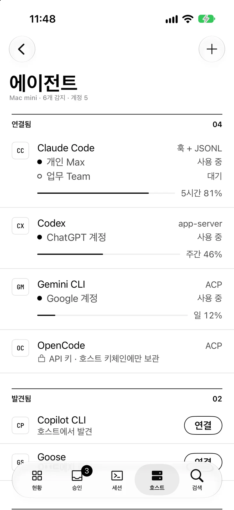
Agents running without approvals
If you start an agent with --dangerously-skip-permissions or --permission-mode bypassPermissions, or set Codex’s approval policy to never, the agent runs commands without asking. Foreman can still show what it does, but cannot stop it. To keep risky actions under your control from the app, start agents without these options.
Agents on the Free plan
The Free plan connects up to two kinds of agent. A third kind started from a terminal runs as a plain terminal session, without conversation or approvals. Pro has no limit (Pro).
06Approvals and questions
When an agent asks whether it may run a command, or asks a question, requests from all your hosts gather in the app’s 승인 (Approvals) tab. Sessions waiting for you carry a ● mark.
The approval inbox
Filters at the top split all requests, approvals and questions. Each request shows the project, agent, host and the command it wants to run, with 거부 (Deny) and 허용 (Allow). On the home screen and in lists you can also swipe a request to allow or deny it.
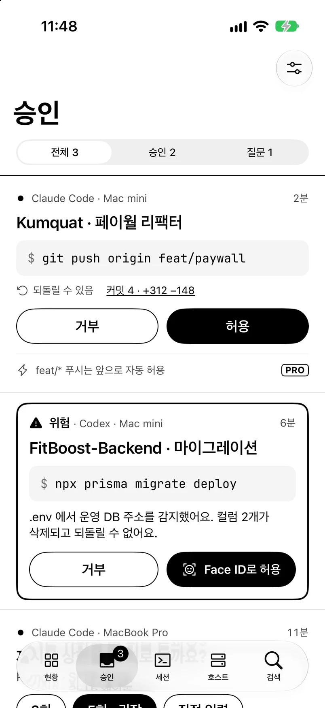
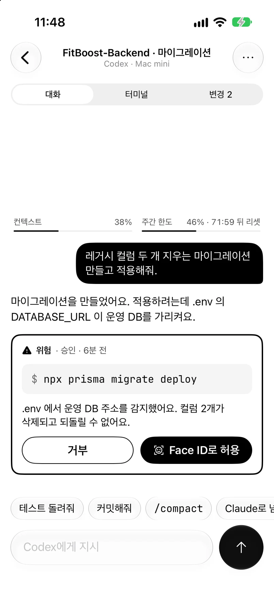
Risk
| Shown as | Meaning | How it can be allowed |
|---|---|---|
| 되돌릴 수 있음 (reversible) | Work that can be undone, such as editing files or ordinary commands. A link shows the diff. | The Allow button, notifications, widgets, Apple Watch |
| ▲ 위험 (risky) | Work that cannot be undone, such as changing a production database or force-pushing. Set apart with a heavy outline. | Only inside the app after you are verified: Face ID, Touch ID or the device passcode; fingerprint on Android; Windows Hello on Windows |
Allowing with Face ID
Risky requests show Face ID로 허용 (Allow with Face ID) (Touch ID on a Mac). The approval reaches the host only after you are verified. If you cancel, 허용하지 않았어요 (not allowed) appears and the request stays. Without a device passcode, risky requests cannot be allowed, so turn the passcode on in the device settings.
Lock Screen and Live Activity
Touch and hold a notification to answer without opening the app.
| Notification | Buttons |
|---|---|
| 승인 필요 (approval needed) | 허용 (Allow) (after unlocking), 거부 (Deny), 세션 열기 (Open session) |
| 위험 높음 · 승인 필요 (high risk · approval needed) | Face ID로 허용 (Allow with Face ID) (opens the app and verifies with Face ID), 거부 (Deny), 세션 열기 (Open session) |
| 질문 (question) | 선택지 1 (Option 1), 선택지 2 (Option 2), 답장 (Reply) |
| 완료 (done) | 세션 열기 (Open session) |
While sessions run, a Live Activity on the Lock Screen and in the Dynamic Island shows how many are running and how many are waiting for you. It goes away two minutes after everything is idle, and can be turned off in Settings › 알림 (Notifications) › Live Activity. The home screen can hold the “Foreman 현황” (status) and “당신 차례” (your turn) widgets.
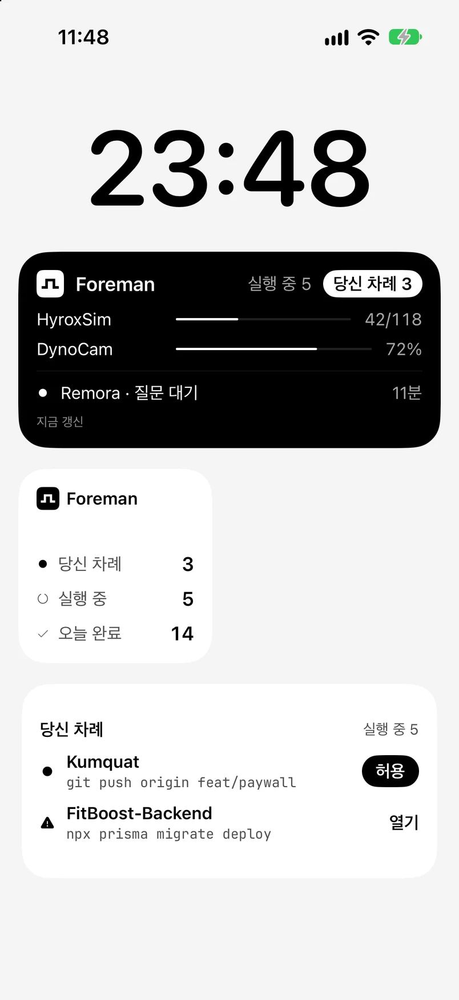
Apple Watch
Approval requests arrive on the watch with 거부 (Deny) and 허용 (Allow); reversible requests can also be allowed with the double-tap gesture. For risky requests the watch notification offers only 거부 (Deny), and the app reads 손목에서 허용할 수 없어요 · iPhone에서 Face ID (cannot allow on the wrist · Face ID on iPhone); handle those on the iPhone. Answer questions with the option buttons or dictation.
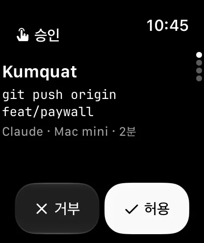
Android and Windows
The Approvals tab works the same way. The filters are all, approvals, questions and risky; risky requests are allowed only after you are verified, with 지문으로 허용 (Allow with fingerprint) on Android or Windows Hello로 허용 (Allow with Windows Hello) on Windows. The Android menu has 보이는 요청 모두 거부 (deny all visible requests).
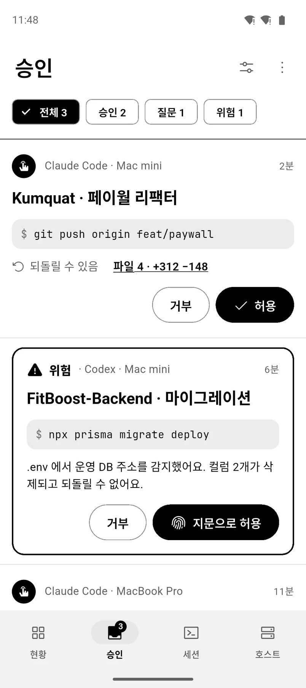
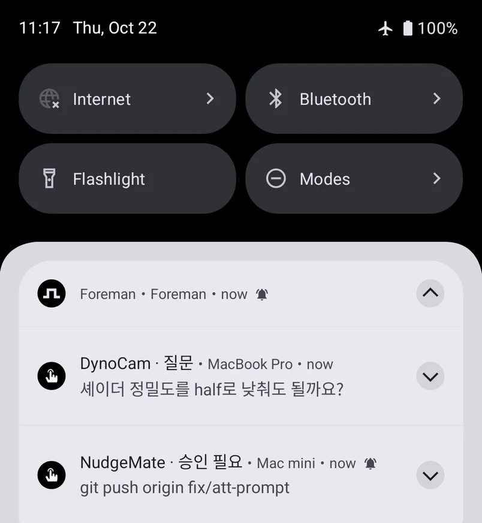
| Notification | Android | Windows |
|---|---|---|
| 승인 필요 (approval needed) | Allow (after unlocking), Deny, Open session | Allow, Deny, Open session |
| 위험 · 승인 필요 (risky · approval needed) | Deny, Open session; allow inside the app with your fingerprint | Deny, Open session; allow inside the app with Windows Hello |
| 질문 (question) | Option chips, Reply, Open session | Option buttons, a reply box, Open session |
On Android, notifications arrive while the app is closed only if 앱을 닫아도 호스트와 연결 유지 (stay connected when the app is closed) is on in Settings. On Windows, notifications (toasts) arrive while the app runs in the tray. In a session, Ctrl+Enter allows and Ctrl+Backspace denies.
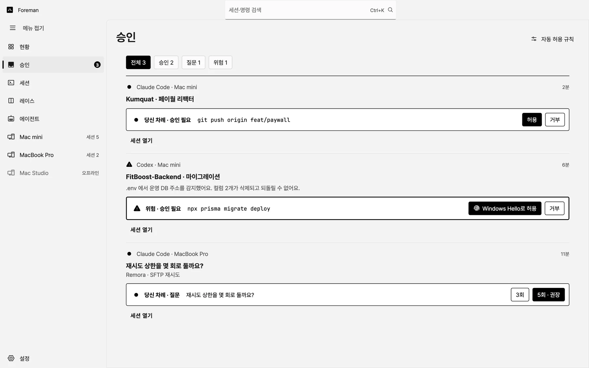
Answering questions
When an agent asks a question, its options appear as buttons and the recommended one is marked 권장 (recommended). If none fits, tap 직접 입력 (Type an answer) and send your own. From a notification, answer with 답장 (Reply).
Auto-allow rules
자동 허용 규칙 (Auto-allow rules) at the top right of the Approvals tab lists the rules stored on the host. Requests that match a rule are handled by it; the rest come to the inbox as before.
| Rule outcome | Meaning |
|---|---|
| 자동 허용 (allow automatically) | Allowed without asking. |
| 물어보기 (ask) | Sent to the inbox to ask you, as usual. |
| 항상 Face ID (always Face ID) | Allowed only after you are verified, every time. |
| 항상 거부 (always deny) | Denied without asking. |
With Pro, tap the “… 는 앞으로 자동 허용” (allow automatically from now on) line under a request to turn requests like it into a rule. The rule is stored on the host, and the host applies it. On Android you can view rules and turn them on or off.
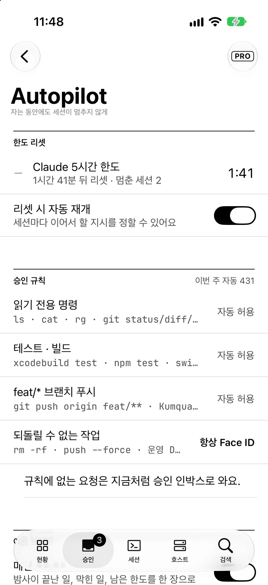
07Sessions
The Sessions tab groups sessions by host. Tap a session to open it; touch and hold it to view it as a terminal or copy its command.
Conversation, terminal, changes
Switch between three views at the top of a session.
- 대화 (Conversation)
- Your instructions and the replies, the files the agent read and changed, and the commands it ran, in order. Type the next instruction below. Context use and limits are shown at the top.
- 터미널 (Terminal)
- The host’s terminal screen as it is. What you type goes straight to the terminal.
- 변경 (Changes)
- Files changed in this session, lines added and removed, and the branch.
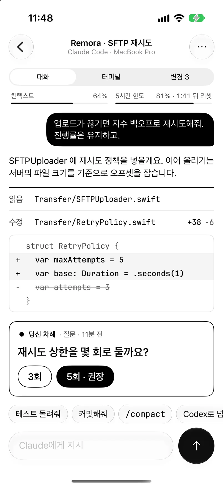
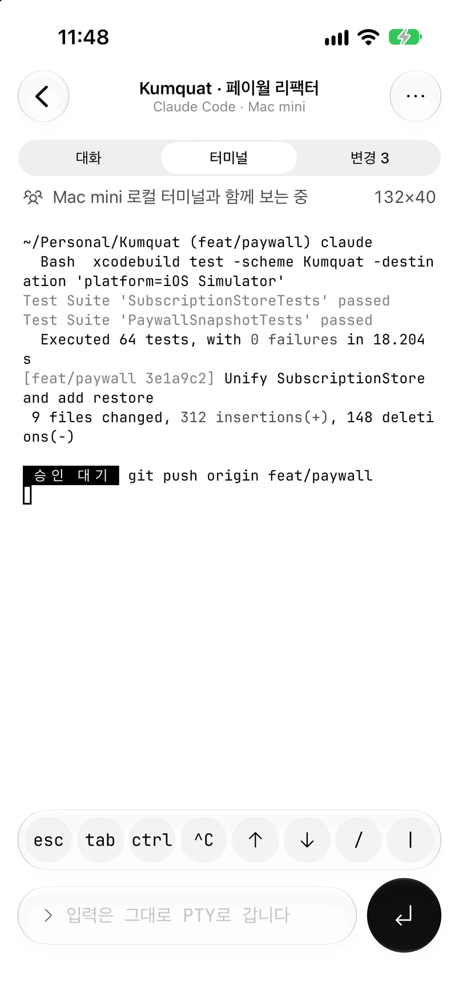
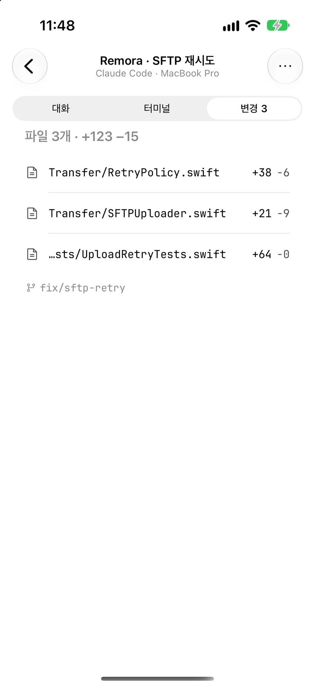
To stop a session, choose 중단 (Stop) in the More menu. After you confirm, the agent is stopped.
The terminal and its key bar
The key bar under the terminal has esc tab ctrl ^C ↑ ↓ / |. Tap ctrl once to combine it with the next key. The host’s own terminal and the app can watch the same session; when they do, a line at the top says so.
Starting a session
- Tap 새 세션 (New session) in the Sessions tab.
- Choose the 호스트 (host). Hosts that are off cannot be chosen.
- Under 폴더 (folder), enter the path on the host to work in (for example
~/Projects/app). - Choose the 에이전트 (agent) and write its first task under 지시 (instruction).
- Set worktree 격리 (worktree isolation) and 편집 자동 허용 (auto-allow edits) if needed, and tap 시작 (Start). With auto-allow edits on, file edits go through without asking; other commands still need approval.
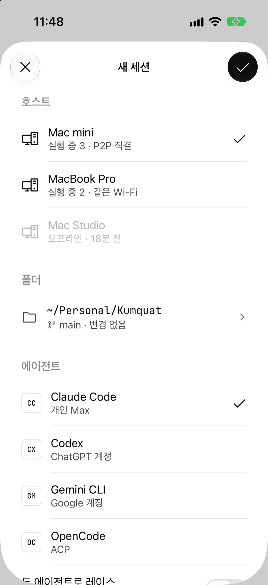
Worktree isolation
With worktree 격리 (worktree isolation) on (the default), the host creates a git worktree just for this session and works on the branch foreman/<session id>, leaving your working folder alone. The worktree is kept when the session ends; review the result, then merge or delete it as you normally would. In a folder that is not a git repository, turn this option off before you start.
Search
Search by session, command or host name.
On iPad and Mac
The control grid on iPad and Mac lays out many sessions on one screen. ⌘↩ allows the request that has waited longest and ⌘⌫ denies it; risky requests are never allowed by shortcut. The Mac app shows sessions by host in the sidebar, the conversation in the middle, and the terminal in a drawer below.
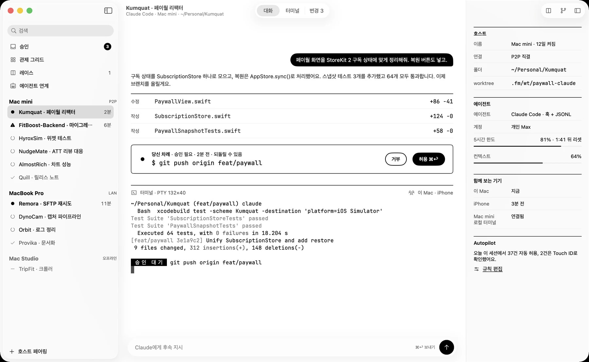
On Android and Windows
- Android: a session has conversation, terminal and changes tabs. Dictate instructions with the microphone button in the conversation tab, and stop a session with 중단 (Ctrl+C) (Stop (Ctrl+C)) in the ⋮ menu. The terminal key bar is the same as on iPhone.
- Windows: a session opens on the terminal, and what you type in the box below goes straight to the terminal. Ctrl+1, 2 and 3 switch tabs.
- In both apps, a new session takes a host, a working folder, an agent, an instruction and the worktree isolation setting.
08Pro
Subscribing
On iPhone and iPad, tap Pro 둘러보기 (Explore Pro) in Settings to open the subscription screen. Choose monthly or yearly; the App Store shows the price and handles payment. On Android, choose a plan under Settings › Subscription › Foreman Pro and tap 구독하기 (Subscribe); Google Play handles payment.
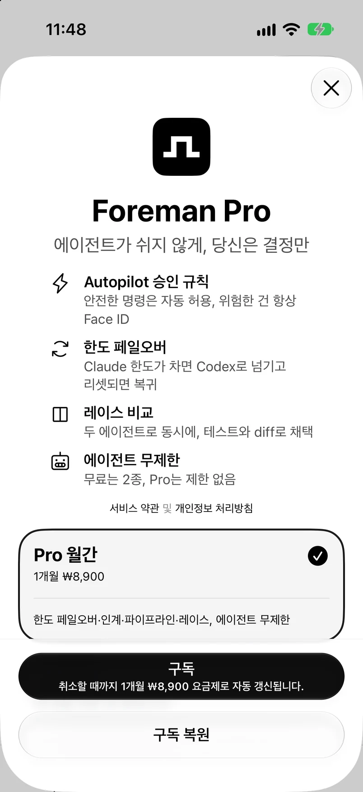
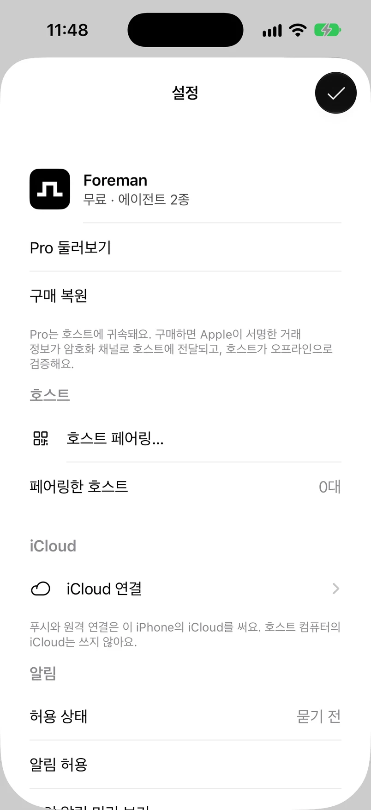
Restoring and cancelling
On a new device, tap 구매 복원 (Restore purchases) in Settings to bring back the subscription of the same account; it is also sent again to your connected hosts. On iPhone, cancel from 구독 관리 (Manage subscription) in Settings or in iPhone Settings › your name › Subscriptions; on Android, cancel in Google Play’s subscriptions. Pro stays on until the end of the period you paid for.
Using Pro on several hosts
Pro belongs to the host. When you buy, the purchase record signed by the store travels to the host over the encrypted connection, and the host verifies it on its own. A subscription applies to every host you have paired, with no limit on the number of hosts, so subscribing on iPhone also opens Pro features in the Mac app connected to the same host. iPhone Settings shows the status for each host, such as “Pro · 확인됨” (Pro · verified).
Limit failover
When an agent hits its usage limit, the next agent picks up the same instruction. On iPhone, open Host › 에이전트 (Agents), turn on 한도에 닿으면 다음 에이전트로 (move to the next agent at the limit) under limit failover, and set the order with 편집 (Edit). For example, when Claude’s limit is reached the work goes to Codex, and comes back after the reset. On a Mac, turn it on in 에이전트 연계 (agent orchestration). The setting is stored on the host, and the host carries it out.
Handing off to another agent
Hand a running session to another agent to carry on. Choose 다른 에이전트로 넘기기 (hand off to another agent) in the session’s More menu on iPhone or in the toolbar on a Mac, then pick the agent. On a Mac, 에이전트 연계 (agent orchestration) shows the handoff history.
Race
Give the same task to two agents at once and compare the results. In a new session, choose two or more agents, turn on 두 에이전트로 레이스 (race two agents) and start. Each agent works in its own worktree. When they finish, 레이스 비교 (race comparison) on iPad and Mac lays out the test results, changes and branches side by side; choose 이 결과 채택 (adopt this result) or 모두 버리기 (discard all).
Resuming after a limit reset
Sessions stopped at a usage limit continue on their own when the limit resets. On iPhone, open the Autopilot screen from 자동 허용 규칙 (Auto-allow rules) on the Approvals tab and turn on 리셋 시 자동 재개 (resume on reset) under the limit reset section, which appears when an agent has hit its limit. On a Mac, turn on 한도가 리셋되면 멈춘 세션 자동 재개 (resume stopped sessions when the limit resets).
Morning briefing
One page on what finished overnight, what got stuck and how much of your limits is left. Turn on the morning briefing on the Autopilot screen and the host prepares it every day at the set time; the bottom of iPhone Home shows the summary, the approve and deny counts, and each session’s result (lines changed, commits, test results).
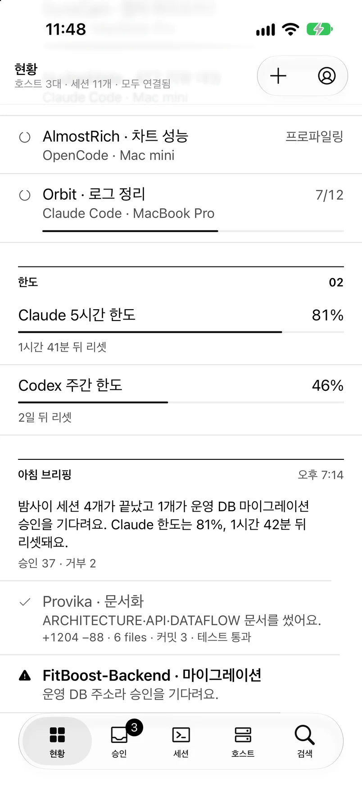
Free and Pro
| Feature | Free | Pro |
|---|---|---|
| Kinds of agent | 2 | No limit |
| Creating auto-allow rules from a request | — | Yes |
| Limit failover | — | Yes |
| Handing off to another agent | — | Yes |
| Race | — | Yes |
| Resuming after a limit reset | — | Yes |
| Morning briefing | — | Yes |
Pro features carry a PRO mark; on Free, tapping one opens the subscription screen. See Pricing for the full comparison.
09Keeping the host on
When the host is off or asleep, its sessions pause and the apps cannot reach it. Prepare the computer you leave your agents on as follows.
Mac
- Turn on 로그인 시 시작 (start at login) in the Foreman Host menu. The host starts at every login and restarts if it stops.
- 잠자기 방지 (세션 실행 중) (prevent sleep while sessions run) is on by default: the Mac stays awake while any session runs and sleeps as usual otherwise. It works while Foreman Host is running.
- 종료 (Quit) in the Foreman Host menu quits only the menu bar app; the host and your sessions keep running.
- For a Mac you will leave alone for long, also check its power and login settings with the always-on check below.
Mac always-on check
상시 가동 점검… (always-on check) in the Foreman Host menu checks whether this Mac can keep sessions running with nobody at it. Each item shows a result (fine, note, warning) and an explanation; items that can be fixed automatically are marked 고칠 수 있음 (can fix).
| Item | What it checks | Fix |
|---|---|---|
| 잠자기 (sleep) | Whether the Mac sleeps while on power | Turn sleep off on power (administrator) |
| 정전 후 자동 시동 (start after power failure) | Whether the Mac turns itself on when power comes back (desktops) | Turn on (administrator) |
| 네트워크로 깨우기 (wake for network) | Whether the network can wake the Mac if it sleeps | Turn on (administrator) |
| 로그인 시 데몬 시작 (start daemon at login) | Whether the host starts at login and restarts if it stops | Turn on start at login in Foreman Host |
| 덮개 (lid) | On a laptop, whether closing the lid puts it to sleep | Advice only: keep the lid open, or use it on power with an external display |
| FileVault | Whether the disk must be unlocked after a restart | Advice only |
| 자동 로그인 (automatic login) | Whether the Mac logs in by itself after a restart | Advice only: turn it on yourself in System Settings › Users & Groups |
| 원격 로그인(SSH) (Remote Login (SSH)) | Whether SSH is on | Advice only |
고치기 (Fix) changes only the items that can be fixed automatically. Power settings change only after macOS asks for an administrator password. Foreman never changes FileVault, automatic login, the lid or Remote Login. With FileVault on, the host does not start after a restart until someone unlocks the disk. On macOS 26, with Remote Login on, you can unlock it over SSH before login; keep SSH open only on your home or office network or a VPN.
In a terminal, run the same check with foreman doctor and the fixes with foreman doctor --fix (foreman doctor).
Windows
foreman doctor checks the following and tells you how to fix each one.
- Sleep
- Sleep and hibernate should be off while plugged in, or sessions pause. In Settings › System › Power & battery › Screen, sleep & hibernate timeouts, set sleep “When plugged in” to Never.
- BitLocker
- With TPM-only unlock, the PC comes back by itself after a restart. With a startup PIN or USB key, the host stays offline until someone unlocks it.
- Sign-in after restart
- The host starts when you sign in. To sign in automatically after updates, turn on “Use my sign-in info to automatically finish setting up after an update” in the sign-in options.
- Windows Update
- Set active hours (up to 18) so updates do not restart the PC during them. A restart ends the sessions that were running.
foreman doctor
foreman doctorEach check prints one line (ok, info, warn or FAIL), and a fix follows on the next line after → when needed. It also checks that the host daemon is running and the shell integration. Warnings alone mean Foreman works, but the host may go offline when nobody is at it.
On a Mac, foreman doctor --fix lists what it can fix and changes it after you confirm; power settings bring up one administrator password prompt. Add --yes when running it outside a terminal.
10Privacy and security
Zero servers of ours
Foreman has no relay, account or logging server run by its developer. Session content travels only between your host, your devices and your own iCloud account, and the developer stores and reads nothing. See the Privacy Policy for details.
End-to-end encryption
Every connection is encrypted end to end with Noise XX (X25519 · ChaCha20-Poly1305). The host key is pinned on the device at pairing, so the app never connects to anyone presenting a different key. On routes through iCloud, iCloud holds only ciphertext (What is stored in the cloud).
Where keys are kept
| Where | What | Stored in |
|---|---|---|
| iPhone · iPad · Mac · Watch | Device key, keys of paired hosts | Keychain (this device only, after first unlock) |
| Mac host | Host key, list of paired devices | ~/Library/Application Support/Foreman (readable by you only) |
| Mac host | iCloud sign-in token | Login keychain |
| Windows host | Host key, list of paired devices | %LOCALAPPDATA%\Foreman |
| Windows host | iCloud sign-in token | Encrypted with DPAPI in %LOCALAPPDATA%\Foreman\secrets |
| Host | Agent API keys | Only on the computer that runs the agent; never sent to your devices |
11Questions
Does closing the terminal window end the session?
No. The host owns the session. A session started through Foreman keeps running when you close the terminal or detach with Ctrl+]; attach again with foreman attach <id> or from the app.
What happens when the host restarts?
If only the host daemon restarts, sessions carry on and the apps reconnect on their own. If the computer restarts, the sessions that were running end.
My iPhone does not reach the host when I am out.
Check that the host is connected to iCloud (the Cloud connection window on a Mac, foreman cloud on Windows) and that the iPhone is signed in to iCloud with the same Apple ID. In the app, Settings › iCloud connection should show the iCloud account as available (Cloud account). No route reaches a host that is off or asleep.
An agent I started in a terminal does not show up in the app.
Check that the shell integration is installed with foreman shim status, and that you started the agent in a terminal opened after installing it (Running agents from the terminal). On Free, a third kind of agent comes in as a plain terminal session.
I cannot allow a risky request straight from the notification.
That is by design. Irreversible work can only be allowed inside the app after you are verified. Face ID로 허용 (Allow with Face ID) in the iPhone notification opens the app and verifies you with Face ID (Allowing with Face ID).
I lost my phone.
Revoke it in the host’s device list (on Windows, foreman devices revoke <id>). It is disconnected at once and cannot connect again (Managing and revoking devices).
The digits differ when I pair.
Press 달라요 (They differ) on both sides and stop. Check your network, then start again with a new code.
I have another problem.
Tell us through GitHub Issues on the Support page. Include your device and OS version and the output of foreman doctor. Do not include API keys or tokens.
12CLI reference
The host comes with the foreman command. On Windows, run foreman in PowerShell; on a Mac, run /Applications/ForemanHost.app/Contents/MacOS/foreman. Most commands answer in a machine-readable form with --json.
Sessions
| Command | What it does |
|---|---|
foreman run <agent> [args…] | Starts a session and attaches this terminal to it, starting the host daemon first if needed. Detach with Ctrl+]; the session keeps running. |
foreman attach <id> | Attaches to a session again. The start of the id is enough. |
foreman ls | Lists sessions: ID, agent, status, PID, size, age, folder. |
foreman kill <id> | Ends the session’s program. |
Pairing and devices
| Command | What it does |
|---|---|
foreman pair | Shows the pairing QR code and link in the terminal and asks you to confirm the device’s six digits. |
foreman devices | Lists paired devices: ID, name, platform, key, paired on, last seen, status. |
foreman devices revoke <id> | Revokes a device and closes its open connections. |
Cloud
| Command | What it does |
|---|---|
foreman cloud | Shows this host’s iCloud and Google Drive connection status. |
foreman cloud login icloud|google [--no-browser] | Signs in in the browser. Sign in once; the host keeps the token safe. |
foreman cloud logout icloud|google | Forgets that sign-in. |
Shell integration
| Command | What it does |
|---|---|
foreman shim install [agents…] | Installs the integration for zsh or PowerShell. The default agents are claude, codex, gemini and opencode. |
foreman shim status | Shows whether it is installed. |
foreman shim uninstall | Removes it. |
Start at sign-in
| Command | What it does |
|---|---|
foreman autostart status | Shows whether start at sign-in is on, and how. |
foreman autostart enable · disable | Turns it on or off for a Windows host installed without the package. On a Mac, use start at login in the Foreman Host menu. |
Status and checks
| Command | What it does |
|---|---|
foreman status | Shows the host daemon’s version, host name, listen address, host key and remote connection status. |
foreman start | Starts the host daemon. |
foreman doctor | Checks that the host is ready to stay on (foreman doctor). |
foreman doctor --fix [--yes] | On a Mac, fixes what can be fixed automatically. Power settings go through an administrator prompt. |
This guide reflects Foreman as of October 23, 2026. The apps are currently in Korean; on-screen labels are quoted in Korean with an English gloss.